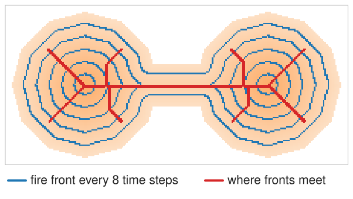
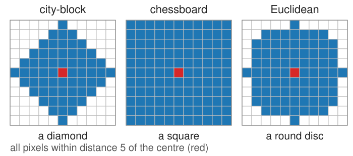
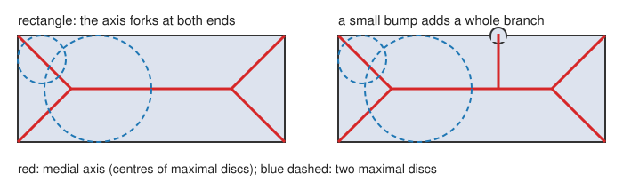
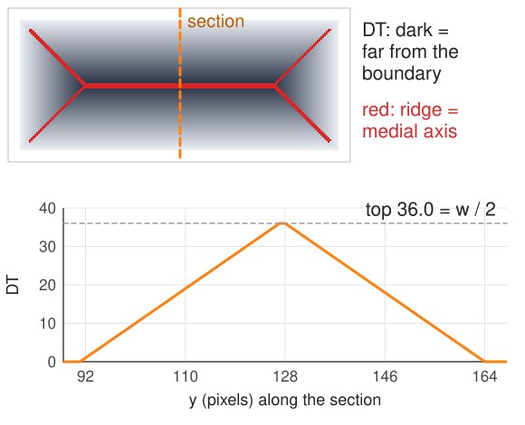
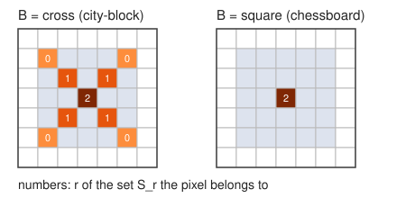
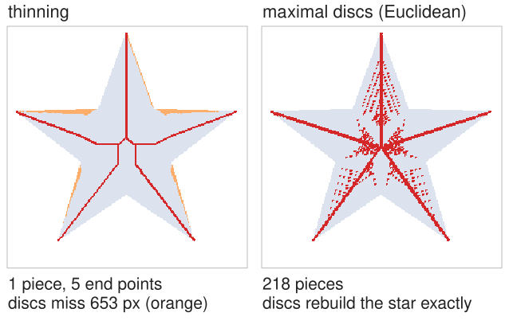
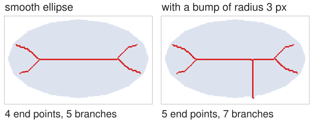

Blum (1967): set fire to the whole boundary at once, and let the fire burn inwards at the same speed everywhere.
At time t the fire front is the set of points at distance t from the boundary.
Fronts coming from different parts of the boundary meet and quench each other.
The skeleton is the set of meeting points; the time at which a point burns is its distance to the boundary.
A long rectangle of width w: fronts from the two long sides meet on the midline at time w/2; near the ends, fronts from a long side and a short side meet on the diagonals.

Recall: the distance transform
From the morphology day: the distance transform\mathrm{DT}(p) of an object pixel is its distance to the nearest background pixel, computed in two raster passes (city-block or chessboard steps) or exactly (Euclidean).
\mathrm{DT} is the arrival time of the grassfire.
Thresholding it, \{\mathrm{DT} > r\}, is the erosion by a disc of radius r.
The metric decides what a “disc” is: a diamond (city-block), a square (chessboard), a round disc (Euclidean).

Maximal discs
Draw a disc inside the shape, centred at p, as large as fits: its radius is \mathrm{DT}(p).
The disc is maximal if no other disc inside the shape contains it.
In the middle of a band, the disc touches both sides: it cannot grow or move without leaving the shape: maximal.
Next to one side only, the disc can slide inwards and grow: it lies inside a bigger disc: not maximal.
The medial axis = the centres of all maximal discs.

Ridges of the distance transform
Read \mathrm{DT} as a landscape: 0 at the boundary, rising inwards.
Across a band of width w, \mathrm{DT} is a tent: it rises from both sides and peaks at w/2 in the middle.
The medial axis is the ridge line (the crest) of this landscape: where \mathrm{DT} stops rising across the shape.
On the pixel grid: p is on the axis if no neighbour q has a disc that swallows p’s disc, i.e. no neighbour with \mathrm{DT}(q) \ge \mathrm{DT}(p) + d(p, q). With city-block or chessboard distances this is a simple comparison with the 4 or 8 neighbours.
Each axis pixel carries its radius\mathrm{DT}(p): the local half-width of the shape. For a vessel, 2\,\mathrm{DT} on the axis is its diameter.

The math: medial axis and reconstruction
For a shape A and a metric d, the disc D(p, r) = \{q : d(p, q) < r\}, \mathrm{DT}(p) = \min_{q \notin A} d(p, q).
D(p, \mathrm{DT}(p)) \subseteq A for every p \in A, and it is the largest such disc at p.
Reconstruction: A = \bigcup_{p \in S(A)} D(p, \mathrm{DT}(p)). Every disc in A lies in a maximal one, and every point of A lies in its own disc.
On the grid, for city-block and chessboard, it suffices to compare with the neighbours: q’s disc contains p’s iff \mathrm{DT}(q) \ge \mathrm{DT}(p) + d(p, q).
The continuous medial axis of a rectangle a \times b (a > b): a midline segment of length a - b and four diagonals to the corners.
Try it: the medial axis
Lantuéjoul’s formula: skeleton from erosions
Lantuéjoul (1978) builds the same skeleton with the operations of the morphology day only:
Erode the shape r times by a small element B (3 × 3 cross or square): what is left are the centres of discs of radius r that fit.
Open that result by B: the opening keeps every pixel that lies in a slightly bigger disc.
What the opening removes are the centres of discs of radius r that are maximal: the set S_r.
The skeleton is the union of all S_r; and S_r dilated r times gives back its part of the shape.

The math: Lantuéjoul’s formula
With rB = B \oplus \dots \oplus B (r times; 0B = the origin):
p \in A \ominus rB: the disc p + rB fits. p is removed by the opening: no disc q + (r+1)B that fits contains p + rB. So p + rB is maximal.
On the grid with B = cross (city-block): S_r = the pixels with \mathrm{DT} = r + 1 that have no 4-neighbour with \mathrm{DT} = r + 2: exactly the maximal-disc test.
A 5 × 5 square: with B = square, S_0 = S_1 = \emptyset, S_2 = the centre; with B = cross, S_0 = the 4 corners, S_1 = 4 diagonal pixels, S_2 = the centre.
Only erosions, openings, set differences and unions: exact reconstruction, but the skeleton is in general not connected.
Thinning vs medial axis
thinning
medial axis (maximal discs)
connected
yes (topology kept)
often not, on the pixel grid
one pixel wide
yes
not always
centred
approximately
exactly (by definition)
reconstructs the shape
no
yes, with the radii
Practical tools combine both: thin for a connected line, then read \mathrm{DT} along it for the radius.
Both share the same weakness, next slide.

Sensitivity to the boundary
The medial axis is not continuous in the shape: a tiny change of the boundary can change it a lot.
A bump of one or two pixels on the boundary gets its own maximal discs: a whole new branch runs from the axis out to the bump.
A rectangle’s axis forks at each end: four branches to the corners, even though the shape “is” a line.
On real masks every pixel step on the boundary is a potential bump: raw skeletons are full of short spurs.
Remedies: smooth or open the mask first; prune short spurs (next unit); or keep only axis points whose two nearest boundary points are far apart, at least λ (the “λ-medial axis”).

Try it: one bump, one branch
Summary
Grassfire: burn from the boundary; the skeleton is where the fronts meet; the arrival time is the distance transform.
Medial axis = centres of maximal discs = ridges of \mathrm{DT}; each axis point has a radius \mathrm{DT}.
Reconstruction: the union of the maximal discs is the shape: axis + radii is a lossless shape code.
Lantuéjoul: S_r = (erosion by rB) minus its opening; the union of the S_r is the skeleton, the union of S_r \oplus rB the shape.
Thinning is connected but only approximately centred; the discrete medial axis is centred but often broken. Use thinning for the line and \mathrm{DT} for the radius.
A small bump makes a whole branch: smooth, prune, or use λ.